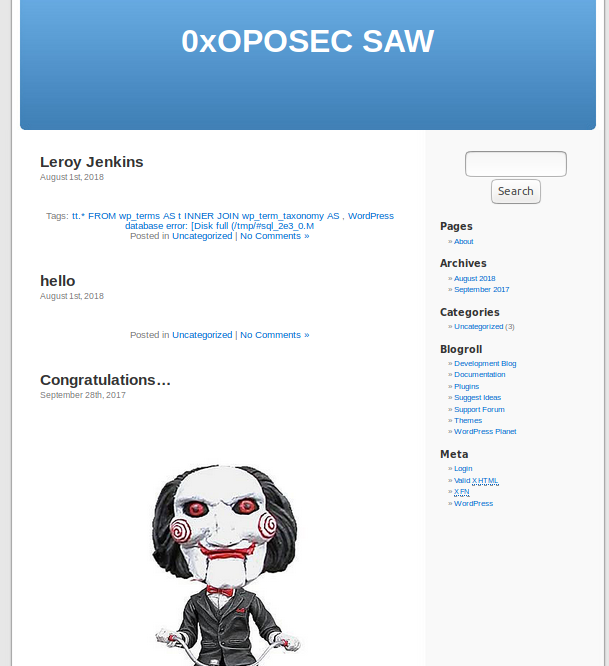
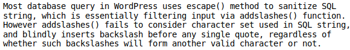
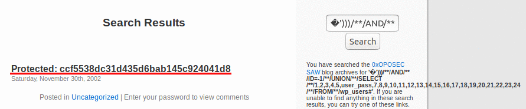
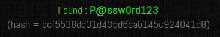
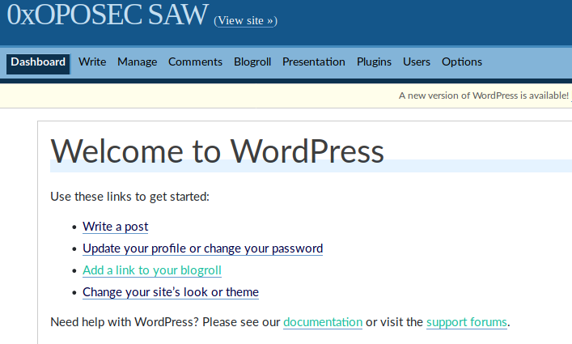
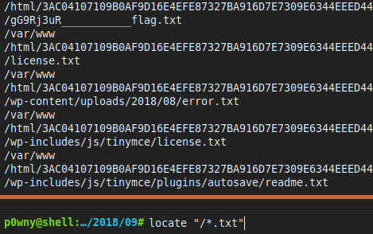
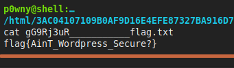

We love Web 2.0
The next challenge was a Web-type challenge. They gave us a wordpress site and we had to find a way to exploit it. The site had some posts and some pictures.

I used dirsearch and i've found some cool stuff like a directory
list but it was useless because I couldn't extract any information from those files. Then I looked for
installed plugins (since many plugins from wordpress are vulnerable) and I found akismet plugin. I tried to
exploit akismet with some XSS payloads but nothing worked. Another thing I knew was that the user for the
admin was "admin" since I only got the "wrong password" error. Next step was to use wpscan and I found a WordPress 2.3.1 - Charset SQL Injection Vuln
(CVE-2007-6318).

After that I injected the payload in the search field and the
output looked like a md5 hash. Decoding the hash gave me the result:P@ssw0rd123.



Next step was to find the flag. I looked in the backoffice but I
was looking in the wrong place. After googling a bit I decided that I should upload a shell. To locate
the flag I used a locate comand to find any txt file in the root dir.

I noticed that the first result was the flag so the next thing
I did was use cat to see the content of that text file and move to another challenge.

flag{AinT_Wordpress_Secure?}